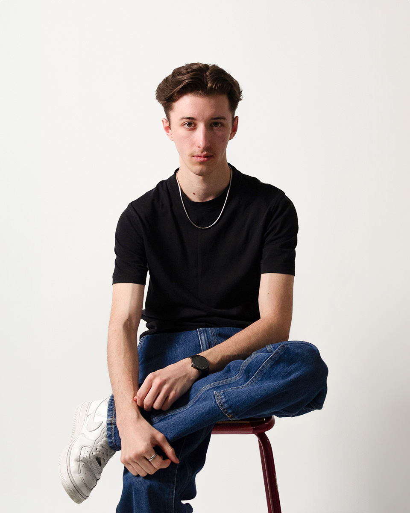

Junior Art Director at Mazarine Stories,
I collaborate with brands to bring to life diverse projects and immersive experiences that capture their essence and resonate with their audience. At the same time, I'm pursuing a Master's degree in Graphic Design at Campus Fonderie de l'Image, where I'm perfecting my mastery of design and visual storytelling. Passionate about the world of luxury and the impact of new generations of consumers, I explore creative solutions combining innovation, detail and strategy.
